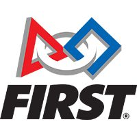
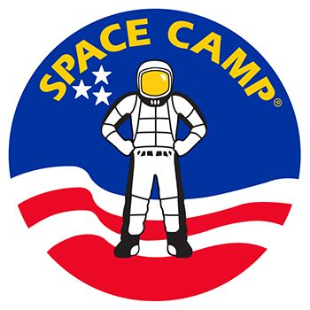
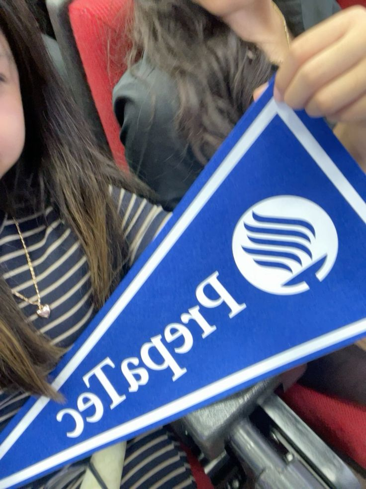

About Me
I'm Priss Marquez, a high school student passionate about programming and space exploration. I love creating applications and learning about artificial intelligence. My dream is to work in the aerospace industry and contribute to the future of space exploration.
Curriculum
FIRST Robotics Competition
FIRST Robotics Competition is a global program where students design, program, and build robots to compete in challenges. It encourages teamwork, creativity, and problem-solving.
Space Camp
Space Camp is an educational program that immerses participants in astronaut training and simulates space missions. It inspires students to pursue STEM careers.
Student Groups at Tec
Active member of Tec de Monterrey student groups, where I collaborate with peers on innovative projects and leadership activities.
Explore My Portfolio
Curious about my projects? Check out my portfolio to see what I've been working on. You'll find a variety of programming projects showcasing my skills and creativity.
Go to My Portfolio